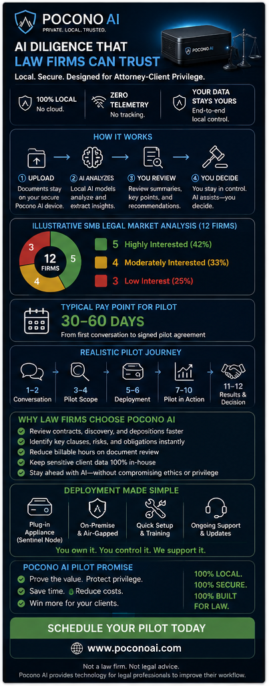

AI Diligence That Law Firms Can Trust.
Local AI infrastructure built for confidentiality-sensitive legal work. Pilot-ready in 30–60 days. Zero cloud telemetry. Attorney-client privilege protected by architecture — not by a contract you have to enforce.
The Whole Picture

What This Solves
Local AI. Faster Review. Privilege Intact.
The Sentinel Node™ is a plug-in AI appliance deployed inside your firm. It indexes your case files, contracts, depositions, and discovery production locally — then accelerates document review, citation cross-referencing, and brief drafting without sending a single byte to the cloud.
What changes for the attorney: Document review that took four billable hours now completes in minutes. Citations come from your actual case file, not from a hallucination. Every retrieval is logged in a reviewable audit trail. And the data never leaves the building.
Why Law Firms Choose Pocono AI
Built for Confidentiality. Designed for Practice.
100% Local Processing
The AI model, vector database, and audit log all run on hardware inside your office. Air-gapped operation supported.
Privilege by Architecture
No transmission event. No third-party data processor. No vendor server seeing client documents. Privilege protection is structural.
You Own the Infrastructure
The hardware lives in your firm. The audit log lives in your firm. If you cancel, you keep your data and your appliance.
Reduce Billable Hours on Review
Discovery review, contract markup, deposition cross-referencing — meaningfully faster with attorney verification preserved.
Auditable & Transparent
Every prompt, retrieved document, and AI response is sealed in a reviewable audit log. Reconstructable months later.
Human-in-the-Loop
Every AI output is a draft pending attorney review. The system supports professional judgment — it does not replace it.
Pilot Timeline
30 to 60 Days. From First Conversation to Pilot Results.
A realistic deployment path that respects how law firms actually evaluate technology. No surprise integrations, no professional services overruns, no cloud sub-processors to vet.
Ready to Discuss a Pilot for Your Firm?
Direct technical conversations with Marcus — no sales team, no deck-driven pitch. Just a 30-minute review of whether the Sentinel Node fits your firm's case mix and workflows.
Prefer phone? Call or text the Chief Technologist: (570) 534-0602
Not a law firm. Not legal advice. Pocono AI provides technology for legal professionals to improve their workflow. Deployment outcomes depend on firm workflows, case mix, and adoption.